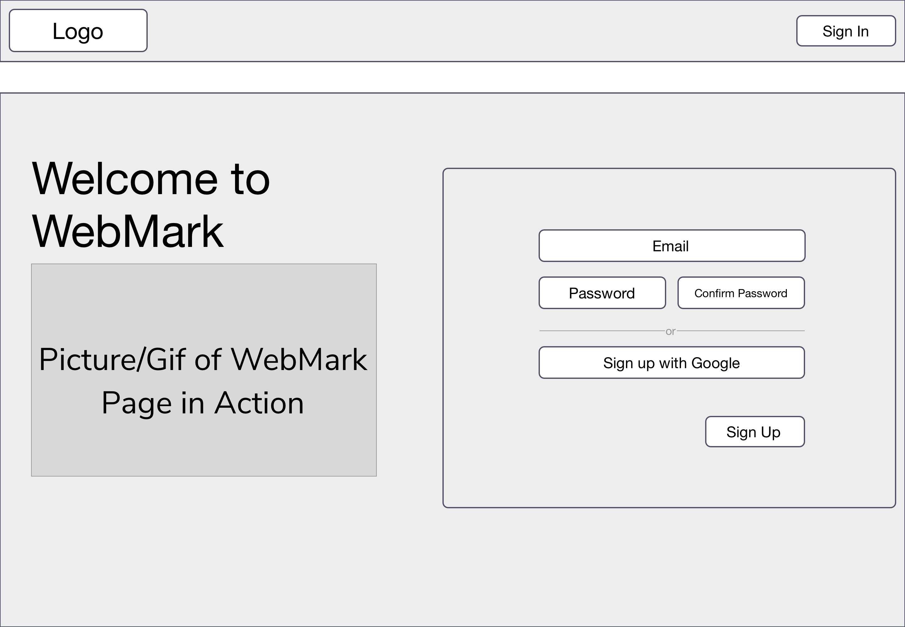
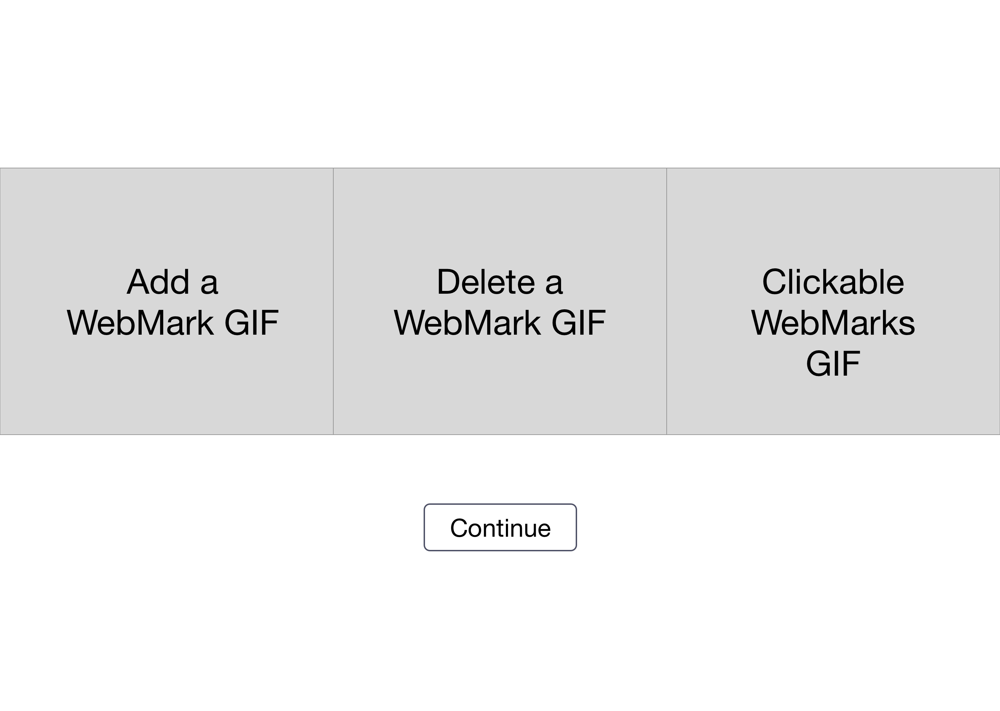
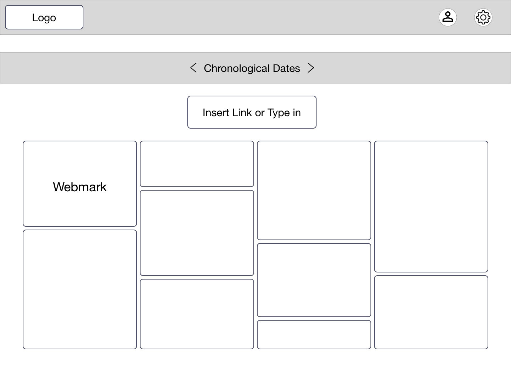
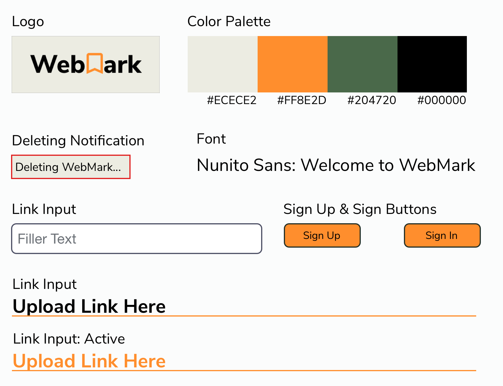
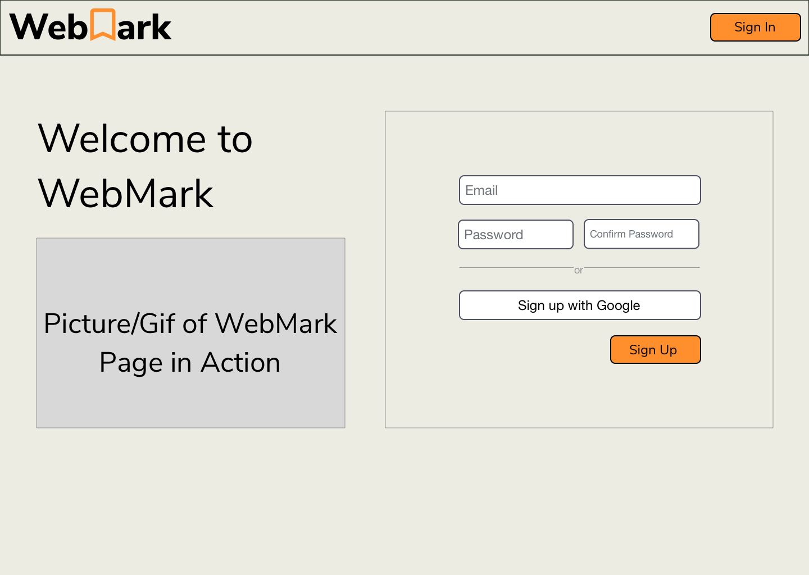
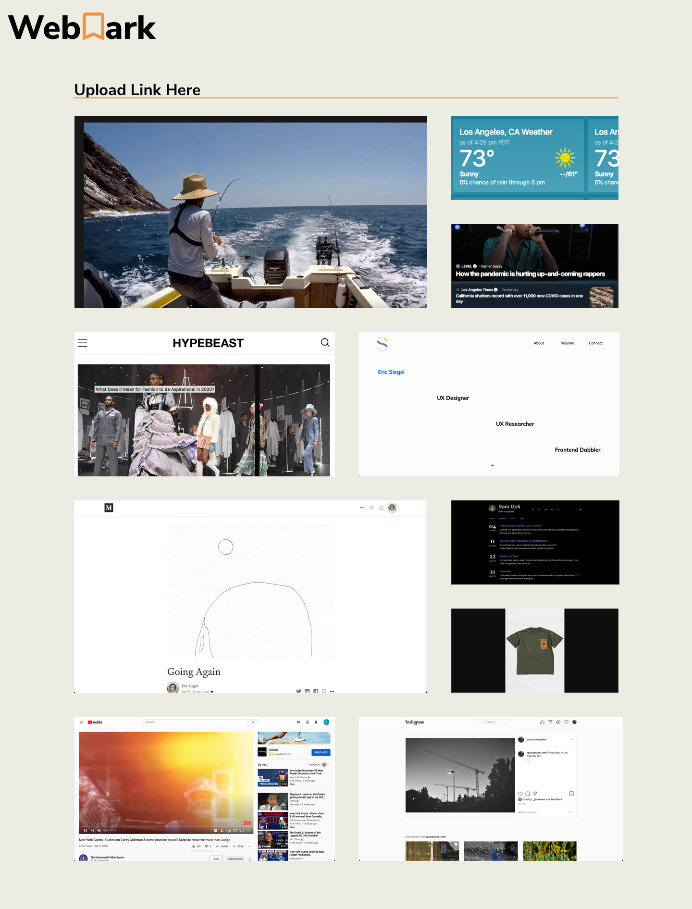
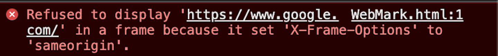

WebMark
A web application allowing users to curate their web activity in an artistic way.
Duration
June 2020 - October 2020
Role
UX Designer, UI Designer, Front End Developer
Tools
HTML, CSS, Javascript, Firebase, Sketch
Platform
Web App
Team
3
Introduction
At the beginning of quarantine for the COVID-19 pandemic, I knew I wanted to create a web application with all the spare time I had. My focus was on allowing users to easily document their experience during this unprecedented time.
I noticed a couple of weeks into quarantine, I was spending a great deal of time on my desktop. Since I didn't have a lot of lived experiences to journal, I wondered:
Could curating your web activity be the next form of journaling?
User Research Part I
Habit Data
Before starting my design process, I wanted to get a sense of what people's journaling habits and desktop usage habits were. I collected these responses by sending out a Google Form to friends and friends of friends:
¬ 58 Responses
¬ Average age: 29.85 years old
¬ How often do you journal per week?: 1.264 times per week
¬ How many hours a day do you use your laptop/desktop?: 6.424 hours per day
Visited Sites Data
In addition to getting users' habit data, I wanted my design decisions to be informed by what websites people were using most frequently due to Jakob's Law.
Jakob's law states: Users spend most of their time on other sites. This means that users prefer your site to work the same way as all the other sites they already know.
Here are the websites I was going to take design and user experience hints from:
Initial Ideas and Designs
In order to recruit my fellow UI/UX Designer, Jason Kuang, and my backend developer, Akaash Venkat, I created three informational pieces/visuals to explain my initial ideas and designs. I had pitched the idea under the name: WebMark.
Design Manifesto
I wanted to outline what WebMark's intention is and how user's can use it:
WebMark is an online platform that acts as an interactive journal for your online activity.
WebMark bridges the gap between bookmarking and visualizing interesting items you come across online, whether it’s YouTube videos, songs on Spotify, or articles on Medium.
All you have to do is add a link manually on your WebMark profile page or use our Google Chrome Extension to create an interactive entry for that link. If it’s a video, you can play it right on WebMark.
User Flow
Lo-Fi Wireframe
There are three major points where I had to design lo-fi wireframes:
The Homepage
The Walkthrough page
The WebMark page
The Homepage was inspired by the Gmail and Facebook sign in pages: spliting the screen in vertical halves, with a quick intro on the left and sign up div on the right.
The most unique design for WebMark is the WebMark page. Discussing with my other UI/UX Designer Jason, we wanted the WebMark page to have an asymetrical layout in order to distinguish.

→
↓

→
↓

Style Guide

High Fidelity Wireframe


Building the MVP
iframe Adjustment from initial design
The main issue that Akaash and I ran into was the interactive side of WebMark. Initially, I planned to implement interactivity in the form of iframes, which are HTML tags where you can add a source URL and the user can scroll the site from that div.
Below is an example of an iframe for my portfolio and a youtube video: (Go Ahead! Scroll through the sites/play the video)
Now, certain websites have a setting (called an x-frame-options setting) to prevent their sites from being put in an iframe. This is limit instances of session hijacking or basically someone hacking your account.
Notice what happens when I put a google search in an iframe:
URL: https://www.google.com/
On the backend, I get this error:

Insert Slight Panic 🥵
After some quick reconnaissance research, I thought we could replace some of the iframes for websites with screenshots of the sites and making the WebMarks clickable so users could visit the sites stored with a single click. The implementation for the web screnshots came by using Selenium to take screenshots of websites that weren't videos or social media posts, which are allowed to be put in iframes.
Crisis quickly averted 😌
THE MVP!
After the iframe adjustment and a couple of months working, WebMark's MVP was ready to roll out. This is the site where we would begin our user interviews on what they like about the site and what could be improved: